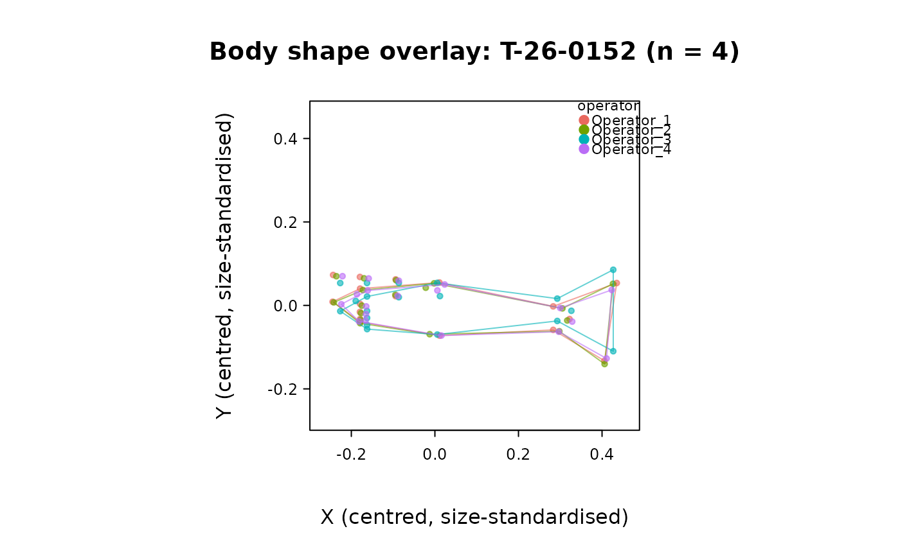

Flag individuals whose landmark configuration disagrees across operators, and attribute the disagreement to a specific operator
Source:R/operator_disagreement.R
operator_disagreement.RdScreens a landmark data set in which the same physical individuals were
each digitized once (or a few times) by several independent operators
– as produced by load_t26_saudrune_landmarks() with
source = "operators" – and returns, for every individual, a single
inter-operator disagreement index together with an automatic "at-risk"
flag and, where identifiable, the operator responsible for the
disagreement. It is the population-level, one-number-per-individual
companion to the by-eye, one-individual-at-a-time overlay of
plot_fishmorph_shapes() (operator = TRUE): rather than paging through
every fish to spot the ones whose operators drew visibly different shapes,
operator_disagreement() ranks all individuals by how much their
operators disagree, flags the unusually discordant ones, and names the
operator whose placement is the outlier.
Usage
operator_disagreement(
landmarks,
individual = NULL,
operator = NULL,
species = NULL,
normalization = c("centroid_size", "landmarks", "standard_length"),
ref_landmarks = c(1, 2),
exclude_landmarks = NULL,
reference_operator = NULL,
threshold = 3,
min_operators = 2,
digits = 4
)
# S3 method for class 'intrait_operator_disagreement'
print(x, ...)
# S3 method for class 'intrait_operator_disagreement'
plot(x, type = c("individual", "operator", "landmark"), ...)Arguments
- landmarks
An object of class
"intrait_landmarks"(fromread_tps(),read_landmarks_csv(),read_mlmorph_landmarks(), orload_t26_saudrune_landmarks()) in which each physical individual has been digitized by two or more operators (one or more configurations per operator; seeindividual/operator).- individual
A factor or character vector with one entry per specimen/row in
landmarks(lengthdim(landmarks$coords)[3]), giving the identity of the physical individual each digitization belongs to. Defaults tolandmarks$metadata$individualif present.- operator
A factor or character vector of the same length, giving the operator who produced each digitization. Defaults to
landmarks$metadata$operatorif present (as produced byload_t26_saudrune_landmarks()withsource = "operators"). When an operator digitized the same individual more than once, that operator's replicate configurations are first averaged (landmark-wise mean, ignoringNA) into a single per-operator configuration, so every operator contributes exactly one configuration per individual and no operator is implicitly up-weighted by having digitized an individual more often.- species
A factor or character vector of the same length, giving species identity, used only to annotate the output. Defaults to
landmarks$metadata$speciesif present.- normalization
Character, one of
"centroid_size"(default),"landmarks", or"standard_length", giving the per-individual reference distance by which raw landmark displacements are divided so that the disagreement index is a size-free percentage, comparable across individuals of very different body size (as indigitization_error())."centroid_size"uses each individual's own mean landmark-configuration centroid size (averaged over its operators; Bookstein, 1991), the self-contained default that requires no landmark choice and matches the centre-and-scale view drawn byplot_fishmorph_shapes()(align = TRUE);"landmarks"uses the inter-landmark distance betweenref_landmarks(averaged over the individual's operators);"standard_length"uses the individual's meanstandard_length_mmfromlandmarks$metadata. Unlikedigitization_error(), the reference is always computed per individual (not per species), since the quantity of interest here is how much the operators of one fish disagree relative to that fish's size.- ref_landmarks
Integer vector of length 2, the two landmarks whose distance is the size reference when
normalization = "landmarks". Defaults toc(1, 2). Ignored otherwise.- exclude_landmarks
Optional integer vector of landmark indices to exclude from the disagreement calculation entirely – most importantly the embedded scale-bar calibration points (landmarks 20-21) of the FISHMORPH scheme (
fishmorph_segments()), which encode a fixed real-world distance rather than a body landmark and so are not a homologous point whose across-operator scatter is meaningful. Defaults toNULL(all landmarks used); passc(20, 21)for FISHMORPH-scheme data (see Examples). Excluded landmarks may still be used inref_landmarks.- reference_operator
Optional character scalar naming one operator (a value of
operator) to treat as a gold-standard reference against which the others are measured, e.g. an expert digitizer. When supplied, each other operator's deviation for an individual is its distance to the reference operator's configuration of that individual, and the responsible operator is the non-reference operator that deviates most from it. This makes operator attribution identifiable even for individuals digitized by only two operators (see Details). Defaults toNULL: attribution is then made against a leave-one-out consensus of the other operators, which is only identifiable when an individual has at least three operators (again, see Details). The disagreement magnitude (disagreement_pct) is a symmetric, reference-free quantity and is unaffected byreference_operator.- threshold
Numeric, the number of median absolute deviations (MAD) above the median disagreement index beyond which an individual is flagged as at-risk. Defaults to
3, the same robust rule (and default) asdetect_outliers()and the within-group screen underlyingspecies_sensitivity(). The median and MAD are used, rather than the mean and SD, because they are themselves resistant to the discordant individuals being screened for.- min_operators
Integer, the minimum number of distinct operators an individual must have to be included. Defaults to
2(the smallest number for which any disagreement can be defined). Individuals digitized by fewer operators are dropped, with a message.- digits
Integer, number of decimal places to round percentages to. Defaults to
4.- x
An object of class
"intrait_operator_disagreement".- ...
Currently unused (
print) or passed tographics::plot()/graphics::barplot()(plot).- type
Character, one of
"individual"(default),"operator", or"landmark", selecting which viewplot.intrait_operator_disagreement()draws: a ranked dot plot of every individual's disagreement index with at-risk individuals highlighted and the threshold marked (as indetect_outliers()); a bar plot of mean deviation per operator; or a bar plot of mean across-operator spread per landmark.
Value
An object of class "intrait_operator_disagreement", a list with:
by_individualdata.frame, one row per retained individual, ordered by decreasing disagreement, with columnsindividual,species,n_operators,operators(comma-separated labels),disagreement_pct(the index: the mean across landmarks of the root-mean-square across-operator displacement from the per-landmark consensus, as a percentage of the reference distance),max_landmark_pct(the single most discordant landmark's value),at_risk(logical,disagreement_pctexceeds the robust threshold),responsible_operator(the attributed operator, orNAwhen not identifiable – see Details),responsible_deviation_pct, andattribution_margin_pct(how far ahead of the next operator the attributed one is; small values mean a low-confidence attribution).by_operatordata.frame, one row per operator, with the number of individuals it digitized, its mean and SD deviation across them, and how often (count and percentage, among identifiable individuals) it was the responsible operator – the systematic view that also resolves, at the population level, the two-operator individuals whose culprit is not identifiable one at a time.by_landmarkdata.frame, one row per landmark, giving the mean/median/SD across-operator spread at that landmark over all individuals, ordered by decreasing mean spread – which anatomical points the operators disagree on most.landmark_operatorlong
data.frame, one row per individual x operator x landmark, of normalised displacements from the per-landmark consensus, for drill-down.threshold_valuethe numeric
disagreement_pctcut-off implied bythreshold.threshold,normalization,reference_operator,excluded_landmarksthe settings used.
Has dedicated print() and plot() methods.
Invisibly returns x.
Invisibly returns x.
Details
For a given individual and landmark, let the (single, per-operator)
positions be \((x_o, y_o)\) for operators \(o = 1, \dots, K\), with
consensus (mean across operators) \((\bar{x}, \bar{y})\). Operator
\(o\)'s displacement is \(d_o = \sqrt{(x_o - \bar{x})^2 + (y_o -
\bar{y})^2}\), and the landmark's across-operator spread is the
root-mean-square \(\sqrt{\frac{1}{K}\sum_o d_o^2}\). The individual's
disagreement index is the mean of that spread over all (included)
landmarks, divided by the individual's reference distance and expressed as
a percentage (see normalization). This is the inter-operator analogue of
the intra-operator, repeated-digitization bias of digitization_error():
there the replicated configurations come from one operator digitizing
the same specimen repeatedly (quantifying repeatability); here they come
from different operators digitizing it once each (quantifying
inter-operator disagreement, the "several independent operators" case that
digitization_error() explicitly does not cover; Klingenberg & McIntyre,
1998). Because the calculation is landmark by landmark, it should be
applied only to homologous, independently placed body landmarks: fixed
calibration points such as the FISHMORPH scale bar (landmarks 20-21)
should be dropped via exclude_landmarks (see Examples).
Operator attribution. Detecting that the operators of a fish
disagree is symmetric; attributing the disagreement to one of them is
not always possible. With reference_operator = NULL (the default), the
responsible operator is the one lying furthest from the leave-one-out
consensus of the other operators (a majority-vote logic robust to the
full consensus being dragged toward the outlier). This is well defined
only when an individual has at least three operators: for exactly two
operators the two leave-one-out deviations are equal by construction
(each operator's "consensus of the others" is simply the other operator),
so neither can be singled out and responsible_operator is NA – the
disagreement magnitude is still reported, and the by_operator table
still reveals which operator is systematically discordant across the
whole data set even when no single two-operator fish can be adjudicated.
Supplying reference_operator (e.g. a trusted expert) breaks this
symmetry: every other operator is then measured against that reference, so
attribution becomes identifiable for two-operator individuals as well.
responsible_operator is reported for every identifiable individual, but
is only meaningful for those flagged at_risk; for the rest,
attribution_margin_pct is typically small (the nominally most-deviant
operator is barely ahead), a signal not to over-interpret it.
Like detect_outliers(), this is a fast screening tool, not a formal
test: a genuinely and correctly digitized but naturally unusual fish, or
an individual for which one landmark is legitimately ambiguous, may be
flagged. Always inspect flagged individuals visually (e.g. with
plot_fishmorph_shapes(), operator = TRUE, exactly the per-individual
overlay this function summarises) before acting on the flag. For a
rotation-invariant, formal Procrustes-ANOVA treatment of the same
replicated-digitization design, see measurement_error()
(method = "procrustes").
References
Bookstein FL (1991). Morphometric Tools for Landmark Data: Geometry and Biology. Cambridge University Press.
Klingenberg CP, McIntyre GS (1998). Geometric morphometrics of developmental instability: analyzing patterns of fluctuating asymmetry with Procrustes methods. Evolution, 52(5), 1363-1375.
See also
digitization_error() (intra-operator repeatability from
repeated digitization), measurement_error() (Procrustes-ANOVA
measurement error), detect_outliers() (Procrustes-distance outlier
screen), plot_fishmorph_shapes() (the per-individual, operator-coloured
overlay this function summarises), load_t26_saudrune_landmarks()
Examples
# T-26 Saudrune: every fish digitized once by each of several operators.
fish <- load_t26_saudrune_landmarks(source = "operators")
# FISHMORPH scheme: drop the scale bar (landmarks 20-21) before screening.
od <- operator_disagreement(fish, exclude_landmarks = c(20, 21))
od
#> <intrait_operator_disagreement>
#> Normalization: centroid_size
#> Excluded landmark(s): 20, 21
#>
#> 5 at-risk individual(s) out of 281 (threshold disagreement = 122.2310% of reference)
#>
#> Most discordant individual(s):
#> individual species n_operators
#> T-26-0152 Gobio occitaniae 4
#> T-26-0249 Phoxinus phoxinus 4
#> T-26-0250 Phoxinus phoxinus 4
#> T-26-0248 Phoxinus phoxinus 4
#> T-26-0166 Gobio occitaniae 4
#> operators disagreement_pct max_landmark_pct
#> Operator_1,Operator_2,Operator_3,Operator_4 145.1953 169.2665
#> Operator_1,Operator_2,Operator_3,Operator_4 139.1907 141.6057
#> Operator_1,Operator_2,Operator_3,Operator_4 136.7167 142.5785
#> Operator_1,Operator_2,Operator_3,Operator_4 131.6107 134.5320
#> Operator_1,Operator_2,Operator_3,Operator_4 124.2112 127.0097
#> at_risk responsible_operator responsible_deviation_pct attribution_margin_pct
#> TRUE Operator_3 331.1370 195.6850
#> TRUE Operator_3 321.4837 214.0608
#> TRUE Operator_3 314.4153 206.4166
#> TRUE Operator_3 304.0011 202.4727
#> TRUE Operator_3 286.8979 191.2021
#>
#> Operator disagreement summary:
#> operator n_individuals mean_deviation_pct sd_deviation_pct n_responsible
#> Operator_3 220 92.3006 43.7165 218
#> Operator_4 258 27.1487 17.6727 5
#> Operator_1 279 25.3458 18.0812 20
#> Operator_2 279 25.2475 18.1154 13
#> pct_responsible
#> 85.1562
#> 1.9531
#> 7.8125
#> 5.0781
# the ranked, flagged table of individuals and their culprit operator:
head(od$by_individual)
#> individual species n_operators
#> 1 T-26-0152 Gobio occitaniae 4
#> 2 T-26-0249 Phoxinus phoxinus 4
#> 3 T-26-0250 Phoxinus phoxinus 4
#> 4 T-26-0248 Phoxinus phoxinus 4
#> 5 T-26-0166 Gobio occitaniae 4
#> 6 T-26-0145 Phoxinus phoxinus 4
#> operators disagreement_pct max_landmark_pct
#> 1 Operator_1,Operator_2,Operator_3,Operator_4 145.1953 169.2665
#> 2 Operator_1,Operator_2,Operator_3,Operator_4 139.1907 141.6057
#> 3 Operator_1,Operator_2,Operator_3,Operator_4 136.7167 142.5785
#> 4 Operator_1,Operator_2,Operator_3,Operator_4 131.6107 134.5320
#> 5 Operator_1,Operator_2,Operator_3,Operator_4 124.2112 127.0097
#> 6 Operator_1,Operator_2,Operator_3,Operator_4 117.6103 129.7445
#> at_risk responsible_operator responsible_deviation_pct attribution_margin_pct
#> 1 TRUE Operator_3 331.1370 195.6850
#> 2 TRUE Operator_3 321.4837 214.0608
#> 3 TRUE Operator_3 314.4153 206.4166
#> 4 TRUE Operator_3 304.0011 202.4727
#> 5 TRUE Operator_3 286.8979 191.2021
#> 6 FALSE Operator_3 269.1258 173.5160
# which operator is systematically the most discordant?
od$by_operator
#> operator n_individuals mean_deviation_pct sd_deviation_pct n_responsible
#> 1 Operator_3 220 92.3006 43.7165 218
#> 2 Operator_4 258 27.1487 17.6727 5
#> 3 Operator_1 279 25.3458 18.0812 20
#> 4 Operator_2 279 25.2475 18.1154 13
#> pct_responsible
#> 1 85.1562
#> 2 1.9531
#> 3 7.8125
#> 4 5.0781
# visually confirm a flagged individual (the overlay this summarises):
risky <- od$by_individual$individual[od$by_individual$at_risk]
if (length(risky) > 0) {
plot_fishmorph_shapes(fish, individuals = risky[1],
operator = TRUE, alpha = 0.6)
}

# treat Operator_1 as an expert reference so two-operator fish can also
# have their culprit named:
od_ref <- operator_disagreement(
fish, exclude_landmarks = c(20, 21), reference_operator = "Operator_1"
)